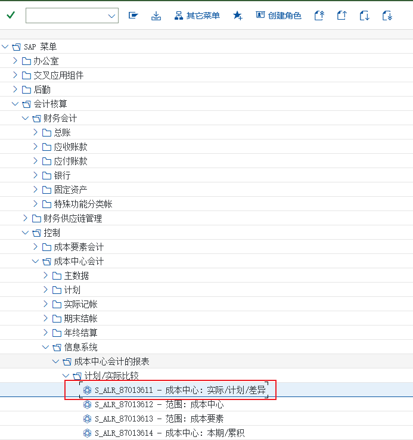
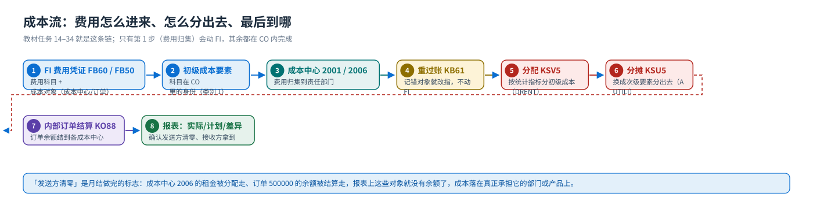
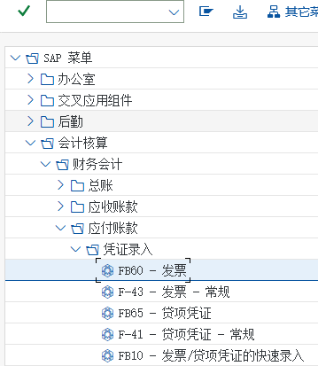
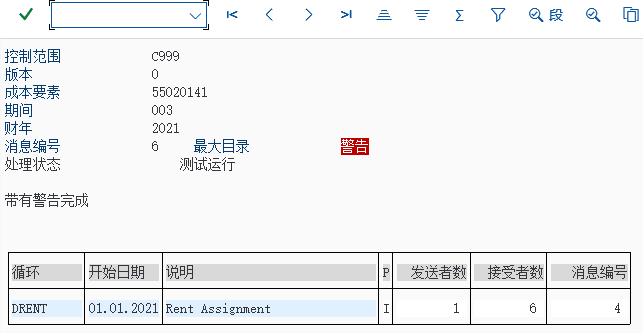

概念与定位
CO 是什么：四大子模块、成本要素与成本对象、与 FI 的分工
先回答三个问题：CO 到底管什么？它产出什么凭证？它的边界在哪里。
一句话定义
CO = Controlling（管理会计）
管「企业内部的钱花在哪里」：哪个成本中心花了多少（成本中心会计）、哪个项目花了多少（内部订单/项目）、这批货的成本是多少（产品成本）、哪个业务赚钱（获利能力分析）。
CO 与 FI 用的是同一批原始数据，但目的不同：FI 面向外部报表（资产负债表、利润表），讲究科目与会计期间；CO 面向内部管理，讲究成本对象（成本中心、内部订单、生产订单）与成本流（费用从哪来、到哪去）。所以 CO 里既有「和 FI 科目一一对应的初级成本要素」，也有「只存在于 CO 的次级成本要素」。
{kind=link}

四大子模块
| 子模块 | 管什么 | 教材覆盖 | 典型事务码 |
|---|---|---|---|
| 成本中心会计 CO-OM-CCA | 成本要素、成本中心与标准层次、作业类型与作业价格、统计指标、重过账、分配与分摊、成本中心报表 | 本教材的主线（任务 01–26） | KA01 · KL01 · KP26 · KB61 · KSV5 · KSU5 |
| 内部订单 CO-OM-OPA | 订单类型与编号范围、订单归集费用、结算规则与结算参数文件、结算到成本中心等接收方 | 任务 27–34 | KO04 · KO88 · KOB1 |
| 产品成本核算 CO-PC | 物料标准成本估算（CK11N/CK24）、成本核算变式、生产订单成本与差异、实际成本核算 | 教材 CO 未演示（作业价格与结算机制在 CCA/IO 里有对应画面） | CK11N · CK24 · KO88 |
| 获利能力分析 CO-PA | 按产品/客户/区域分析收入与成本（毛利分析） | 教材未演示（SD 站有销售侧流程） | KE30 等 |
教材的重点在哪里这本教材的 CO 只讲了两条线：成本中心会计（任务 01–26，含分配与分摊）与内部订单（任务 27–34，含结算）。产品成本与获利能力分析只出现在它处 —— 教材任务 05 提到 41010901「生产成本－生产订单差异」用的是成本要素类别 「22 外部结算」，那就是生产订单结算留下的接口；本站 产品成本篇 把这条接口讲清楚，并标注哪些功能教材没演示。
成本要素与成本对象清单：谁产生、用什么事务码
| 对象/凭证 | 谁产生 | 事务码 | 它的作用 | 对 FI 的影响 |
|---|---|---|---|---|
| 初级成本要素 Primary Cost Element | 管理会计（会计人员） | KA01（任务 05） | 与 FI 的损益类科目一一对应，是「费用进入 CO」的唯一通道 | 不产生凭证；它是科目在 CO 里的身份 |
| 次级成本要素 Secondary Cost Element | 管理会计（会计人员） | KA06（任务 06） | 只在 CO 内部使用：作业分配（43 类）、分摊（42 类）、结算（21/22 类） | FI 里没有对应科目，不产生会计凭证 |
| 成本中心 / 成本中心组 | 管理会计 | OKEON（任务 04） | 费用归集的最小责任单位（2001 财务部…） | 无 |
| 作业类型与作业价格 Activity Type / Price | 管理会计 | KL01 · KP26（任务 10/12） | 把成本中心的成本按「工时/机时」转换出去（LAB/MAC/SET） | 无（内部计价） |
| 统计指标 Statistical Key Figure | 管理会计 | KK01 · KB31N（任务 18/19） | 记录面积/人数等非金额指标，作为分配与分摊的比例基数 | 无 |
| CO 凭证 CO Document | 系统（CO 过账时自动） | KB61 重过账 · KSV5 分配 · KSU5 分摊 · KO88 结算 | 记录成本对象之间的成本流动；分配与分摊不产生 FI 凭证 | 一般不产生（结算到固定总账科目时才产生） |
| 费用凭证（带成本对象） | 财务（会计人员） | FB60（任务 14）· FB50（任务 15/32） | 供应商发票/总账凭证，行项目上填成本中心或内部订单 | 产生 FI 会计凭证，同时把费用送进 CO |
最容易混的一点「费用进了总账」不等于「费用进了成本中心」：
FB50/FB60 的行项目上如果没填成本中心或内部订单（账户分配），这笔费用在 CO 里查不到 —— 教材任务 14/15 之所以天天在用，就是因为成本对象的填写才是 CO 的入口。成本流一张图
{kind=link}

与邻居模块的分界

| 情况 | 该找谁 |
|---|---|
| 要建会计科目、看资产负债表/利润表 | FI（FS00 建科目，CO 只认损益类科目） |
| 要在采购订单上填成本中心（费用类采购） | MM 的账户分配（ME21N 项目明细 → 账户分配） |
| 要看物料标准成本、跑成本估算 | CO-PC（CK11N/CK24，教材 CO 未演示） |
| 要看生产订单成本与差异 | CO 里的生产订单（KO88/差异科目 41010901），PP 侧负责建单与报工 |
| 要按客户/产品看毛利 | CO-PA（教材未演示） |
| 要改供应商发票的科目分录 | FI（FB60），CO 只看它带来的成本对象 |
12 个常见误解
| # | 常见说法 | 实际上 |
|---|---|---|
| 1 | 「CO 是另外一套账」 | 不是。CO 与 FI 共用数据：初级成本要素就是 FI 的损益类科目，费用凭证只有一张；CO 额外做的是「把这些费用分给成本对象」。 |
| 2 | 「费用记到成本中心就自动进产品成本了」 | 中间要经过作业价格（KP26）与结算；产品成本核算（CK11N/CK24）教材 CO 模块未演示，那是 CO-PC 的活。 |
| 3 | 「分配和分摊是一回事」 | 分配（KSV5）搬的是初级成本要素，成本形态不变（2006 的租金还是租金）；分摊（KSU5）用的是次级成本要素，接收方看到的是「电费分摊 802010」这类内部项目（教材任务 23 的原话）。 |
| 4 | 「改成本对象要冲销财务凭证」 | 不用。教材任务 17 用 KB61 重过账，把 90000 房租从 2001 改到 2006，FI 凭证不动 —— 这就是 CO「只管内部分配」的典型例子。 |
| 5 | 「成本控制范围就是公司代码」 | 不是同一个概念：成本控制范围是 CO 的边界，可以包含多个公司代码；教材里是一对一（都用 C999），所以看起来一样。 |
| 6 | 「统计指标是金额」 | 统计指标（KK01）只记数量：面积 480 M2、人数 10 人。金额是按它作基数、由分配规则算出来的。 |
| 7 | 「没有统计指标也能按面积分租金」 | 不能。接收方的追踪因素必须是一个真实的基数：统计指标实际值、固定百分比、或者权重（教材任务 20 用 RENT 实际统计值，任务 23 用固定百分比 75%/25%）。 |
| 8 | 「成本中心可以随便删」 | 有事务数据的成本中心不能删，一般用「锁定」或标记删除；标准层次里的节点结构也会影响上卷报表。 |
| 9 | 「内部订单只是记流水」 | 内部订单是完整的成本对象：有订单类型、预算（教材未演示）、结算规则，期末必须结算（KO88），否则订单上挂着余额。 |
| 10 | 「订单结算只能结算到成本中心」 | 接收方可以是成本中心、总账科目、资产、其他订单/WBS 等；教材演示的是「市场活动订单 → 各成本中心按份额」，份额在结算规则里维护。 |
| 11 | 「跑完分配分摊，FI 里的费用就变了」 | 不会。分配与分摊只在 CO 内产生 CO 凭证，FI 的费用凭证与科目余额完全不变；变的只是「这笔钱挂在哪个成本对象上」。 |
| 12 | 「CO 的表不用看」 | 查问题几乎都落到表：CSKA/CSKB 成本要素、CSKS/CSKT 成本中心、COBK/COEP CO 凭证抬头/行项目、AUFK 订单主数据、COKL 循环。 |
教材画面（先建立整体印象）


{kind=link}

{kind=link}
